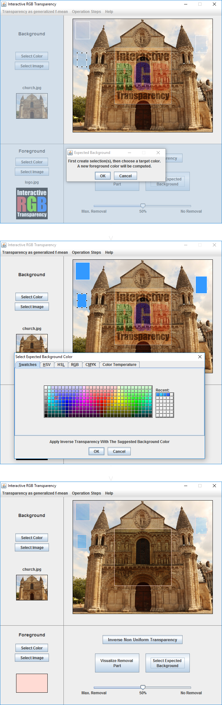

Direct Uniform Transparency
The transparency effect is directly applied on the selection with the chosen transparency rate.
Inverse Uniform Transparency
The transparency effect is removed with the chosen transparency rate. The operation is performed with the same parameters for all the selected pixels. It can give invalid pixels which can be displayed in a color (red in the following example) selected by the user in the settings.

Inverse Non Uniform Transparency
The operation is performed independently for each pixel. A parameter allows monitoring the removal of the transparency effect. The maximum removal corresponds to the limit before the pixel becomes invalid.
Visualize Removal Part
This option allows seeing the removal part on a chosen background.
Select Expected Background
The user can select zones and then the expected background color for these zones. The software computes the foreground color which, when applied to the average pixel color of the selected zones, ensures the best match with the color selected by the user.
